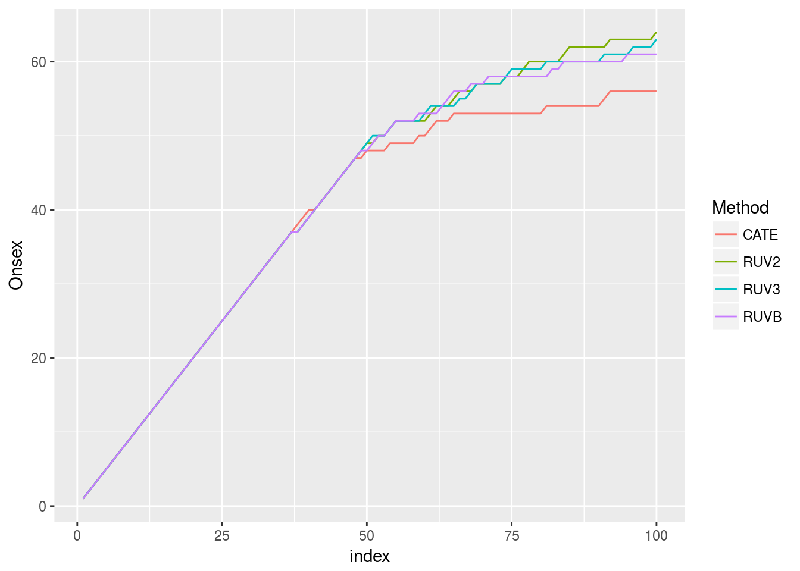
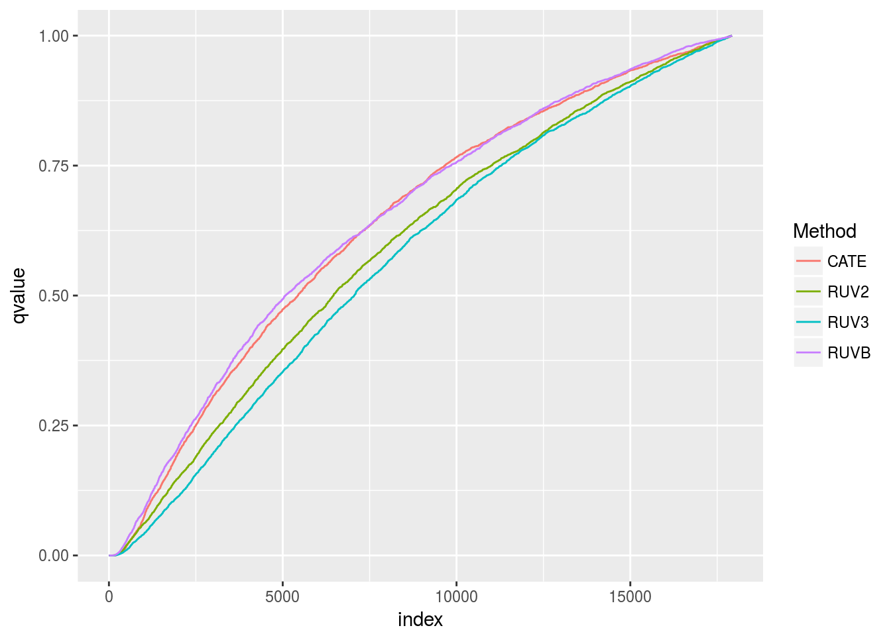

Here, I try to make good plots for the real GTEx data analysis.
I am just going to look at the top methods according to the simulations in terms of AUC.
There isn’t that much to distinguish between the different methods here.
library(tidyverse)## Loading tidyverse: ggplot2
## Loading tidyverse: tibble
## Loading tidyverse: tidyr
## Loading tidyverse: readr
## Loading tidyverse: purrr
## Loading tidyverse: dplyr## Conflicts with tidy packages ----------------------------------------------## filter(): dplyr, stats
## lag(): dplyr, statslibrary(stringr)
source("../../reproduce_ruv3/Code/nc_adjustment_methods.R")
proc_wrapper <- function(predictor, response) {
pROC::roc(predictor = predictor, response = response)$auc
}
topk <- function(predictor, response, num_look = 100) {
sum(response[order(predictor, decreasing = TRUE)[1:num_look]])
}
top_sum <- function(predictor, response, num_look = 100) {
cumsum(response[order(predictor, decreasing = TRUE)[1:num_look]])
}
tissue_vec <- c("adiposetissue", "bladder", "bloodvessel", "breast",
"colon", "kidney", "lung", "nerve", "pancreas",
"skin", "spleen", "adrenalgland", "blood", "brain",
"esophagus", "heart", "liver", "muscle", "pituitary",
"salivarygland", "smallintestine", "stomach", "thyroid")
num_sv_seq <- readRDS("../../reproduce_ruv3/Output/ruvbout/num_sv.Rds")
num_look_seq <- c(100, 300, 500)
topk_array <- array(NA, dim = c(length(tissue_vec), 4, length(num_look_seq)))
nseq <- rep(NA, length = length(tissue_vec))
dimnames(topk_array) <- list(tissue = tissue_vec,
method = c("RUV2", "RUV3", "CATE", "RUVB"),
num_look = num_look_seq)
for(tissue_index in 1:length(tissue_vec)) {
current_tissue <- tissue_vec[tissue_index]
num_sv <- num_sv_seq[tissue_index]
dat <- readRDS(paste0("../../reproduce_ruv3/Output/cleaned_gtex_data/", current_tissue, ".Rds"))
onsex <- dat$chrom == "X" | dat$chrom == "Y"
onsex[is.na(onsex)] <- FALSE
dat$ctl[onsex] <- FALSE
nseq[tissue_index] <- ncol(dat$Y)
cat(tissue_index, "\n")
ruvbout <- readRDS(paste0("../../reproduce_ruv3/Output/ruvbout/ruvbout_", current_tissue, ".Rds"))
RUVBnl <- limma_adjust(obj = list(betahat = ruvbout$means, sebetahat = ruvbout$sd,
df = nrow(dat$X) - ncol(dat$X) - num_sv))
CATEdl <- limma_adjust(cate_simp_nc_correction(Y = t(dat$Y), X = dat$X, num_sv = num_sv,
control_genes = dat$ctl))
RUV2l <- limma_adjust(ruv2_simp(Y = t(dat$Y), X = dat$X, num_sv = num_sv,
control_genes = dat$ctl))
RUV3lb <- ruv3_limma_pre(Y = t(dat$Y), X = dat$X, num_sv = num_sv, control_genes = dat$ctl)
tdat <- data_frame(RUV2 = abs(RUV2l$betahat / RUV2l$sebetahat)[!dat$ctl],
RUV3 = abs(RUV3lb$betahat / RUV3lb$sebetahat)[!dat$ctl],
CATE = abs(CATEdl$betahat / CATEdl$sebetahat)[!dat$ctl],
RUVB = abs(RUVBnl$betahat / RUVBnl$sebetahat)[!dat$ctl])
## auc_out <- apply(pdat, 2, proc_wrapper, response = onsex[!dat$ctl])
for(num_look_index in 1:length(num_look_seq)) {
topk_out <- apply(tdat, 2, topk, response = onsex[!dat$ctl],
num_look = num_look_seq[num_look_index])
topk_array[tissue_index, , num_look_index] <- topk_out
}
}## 1
## 2
## 3
## 4
## 5
## 6
## 7
## 8
## 9
## 10
## 11
## 12
## 13
## 14
## 15
## 16
## 17
## 18
## 19
## 20
## 21
## 22
## 23saveRDS(topk_array, file = "../output/topk_array.RDS")summat <- data_frame(RUV2 = top_sum(predictor = tdat$RUV2, response = onsex[!dat$ctl], num_look = 100),
RUV3 = top_sum(predictor = tdat$RUV3, response = onsex[!dat$ctl], num_look = 100),
CATE = top_sum(predictor = tdat$CATE, response = onsex[!dat$ctl], num_look = 100),
RUVB = top_sum(predictor = tdat$RUVB, response = onsex[!dat$ctl], num_look = 100))
summat$index <- 1:nrow(summat)
longdat <- gather(summat, key = "Method", value = "Onsex", 1:4)
ggplot(data = longdat, mapping = aes(x = index, y = Onsex, group = Method, color = Method)) +
geom_line()
qdat <- as_data_frame(apply(apply(2 * pnorm(q = -as.matrix(tdat)), 2, p.adjust, method = "BH"), 2, sort))
qdat$index <- 1:nrow(qdat)
longdat <- gather(qdat, key = "Method", value = "qvalue", 1:4)
pl <- ggplot(data = longdat, mapping = aes(x = index, y = qvalue, group = Method, color = Method)) +
geom_line()
print(pl)
topk_array <- readRDS("../output/topk_array.RDS")
topk_array## , , num_look = 100
##
## method
## tissue RUV2 RUV3 CATE RUVB
## adiposetissue 58 57 55 56
## bladder 28 29 26 27
## bloodvessel 63 62 59 62
## breast 38 37 34 37
## colon 69 69 66 69
## kidney 39 39 38 39
## lung 67 67 65 66
## nerve 66 67 68 66
## pancreas 56 55 54 56
## skin 61 62 55 61
## spleen 61 60 53 59
## adrenalgland 48 49 49 50
## blood 62 62 60 62
## brain 62 63 59 61
## esophagus 64 63 58 62
## heart 53 51 52 48
## liver 48 46 41 45
## muscle 50 49 50 50
## pituitary 46 46 42 44
## salivarygland 51 51 47 48
## smallintestine 64 65 65 64
## stomach 56 56 55 55
## thyroid 64 63 56 61
##
## , , num_look = 300
##
## method
## tissue RUV2 RUV3 CATE RUVB
## adiposetissue 83 86 81 84
## bladder 41 41 34 36
## bloodvessel 82 82 76 79
## breast 50 46 50 47
## colon 84 85 87 91
## kidney 56 57 49 51
## lung 89 91 85 89
## nerve 90 88 86 88
## pancreas 68 68 64 67
## skin 77 77 74 80
## spleen 79 86 75 80
## adrenalgland 58 59 65 63
## blood 81 82 74 82
## brain 77 76 69 73
## esophagus 84 84 75 85
## heart 71 75 65 73
## liver 56 54 52 53
## muscle 69 66 64 67
## pituitary 60 61 59 57
## salivarygland 64 63 55 58
## smallintestine 82 83 75 81
## stomach 69 71 64 73
## thyroid 85 83 75 80
##
## , , num_look = 500
##
## method
## tissue RUV2 RUV3 CATE RUVB
## adiposetissue 101 99 95 97
## bladder 50 49 42 42
## bloodvessel 94 90 90 87
## breast 58 59 58 53
## colon 94 94 95 98
## kidney 65 66 60 64
## lung 102 101 93 100
## nerve 100 100 101 103
## pancreas 77 72 75 76
## skin 96 91 85 92
## spleen 89 91 84 90
## adrenalgland 74 72 71 68
## blood 88 90 89 92
## brain 81 83 80 83
## esophagus 91 95 90 95
## heart 80 81 78 85
## liver 67 64 61 63
## muscle 78 77 79 73
## pituitary 75 76 71 71
## salivarygland 68 68 67 65
## smallintestine 96 98 93 93
## stomach 85 84 73 80
## thyroid 99 95 86 93sessionInfo()## R version 3.3.2 (2016-10-31)
## Platform: x86_64-pc-linux-gnu (64-bit)
## Running under: Ubuntu 16.04.2 LTS
##
## locale:
## [1] LC_CTYPE=en_US.UTF-8 LC_NUMERIC=C
## [3] LC_TIME=en_US.UTF-8 LC_COLLATE=en_US.UTF-8
## [5] LC_MONETARY=en_US.UTF-8 LC_MESSAGES=en_US.UTF-8
## [7] LC_PAPER=en_US.UTF-8 LC_NAME=C
## [9] LC_ADDRESS=C LC_TELEPHONE=C
## [11] LC_MEASUREMENT=en_US.UTF-8 LC_IDENTIFICATION=C
##
## attached base packages:
## [1] stats graphics grDevices utils datasets methods base
##
## other attached packages:
## [1] cate_1.0.4 stringr_1.2.0 dplyr_0.5.0 purrr_0.2.2
## [5] readr_1.0.0 tidyr_0.6.1 tibble_1.2 ggplot2_2.2.1
## [9] tidyverse_1.1.1
##
## loaded via a namespace (and not attached):
## [1] Rcpp_0.12.10 lubridate_1.6.0 lattice_0.20-34
## [4] corpcor_1.6.8 esaBcv_1.2.1 assertthat_0.2.0
## [7] rprojroot_1.2 digest_0.6.12 psych_1.6.12
## [10] R6_2.2.0 plyr_1.8.4 backports_1.0.5
## [13] stats4_3.3.2 RSQLite_1.1-2 evaluate_0.10
## [16] sva_3.18.0 vicar_0.1.6 httr_1.2.1
## [19] lazyeval_0.2.0 svd_0.4 readxl_0.1.1
## [22] annotate_1.48.0 R.oo_1.21.0 R.utils_2.5.0
## [25] S4Vectors_0.8.11 Matrix_1.2-8 rmarkdown_1.3
## [28] labeling_0.3 splines_3.3.2 foreign_0.8-67
## [31] munsell_0.4.3 broom_0.4.2 modelr_0.1.0
## [34] BiocGenerics_0.16.1 mnormt_1.5-5 ruv_0.9.6
## [37] mgcv_1.8-17 htmltools_0.3.5 IRanges_2.4.8
## [40] leapp_1.2 XML_3.98-1.5 R.methodsS3_1.7.1
## [43] MASS_7.3-45 grid_3.3.2 nlme_3.1-131
## [46] jsonlite_1.3 xtable_1.8-2 gtable_0.2.0
## [49] DBI_0.6 magrittr_1.5 scales_0.4.1
## [52] stringi_1.1.2 reshape2_1.4.2 genefilter_1.52.1
## [55] limma_3.26.9 xml2_1.1.1 tools_3.3.2
## [58] forcats_0.2.0 Biobase_2.30.0 hms_0.3
## [61] parallel_3.3.2 survival_2.41-2 yaml_2.1.14
## [64] AnnotationDbi_1.32.3 colorspace_1.3-2 rvest_0.3.2
## [67] memoise_1.0.0 knitr_1.15.1 haven_1.0.0This site was created with R Markdown